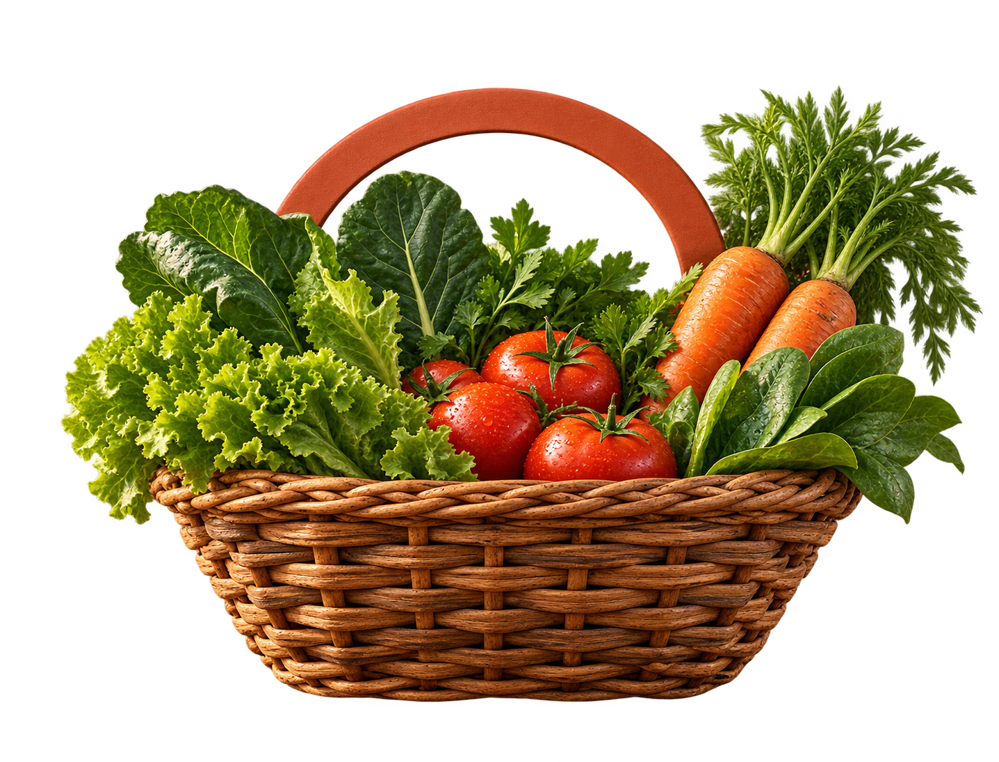

Aline e o pedido da semana
Uma rotina corrida que precisa de clareza, rapidez e confiança no celular.
Quem é: 37 anos, dois filhos e pouco tempo para resolver tudo.
Como pede: escolhe pequena, média ou grande pelo celular.
O que escolhe: cesta pronta, personalizada ou repetida.
O que acompanha: situação da cesta e produtos já separados.
O que precisa: parar de procurar mensagens para lembrar o pedido.
Vanderlei e a separação das cestas
Quem planta e colhe precisa transformar pedidos espalhados em uma rotina conferível.
Quem é: produtor responsável por montar as cestas da semana.
Como trabalha: usa o computador e filtra as cestas por tamanho.
O que registra: produto e quantidade separados em cada cesta.
O que controla: limite da cesta pequena, média ou grande.
O que precisa: parar de montar “no chute” com pedidos dispersos.
Da necessidade
à cesta organizada
As decisões que deram forma ao sistema.
- 01
1 · Problema
- Pedidos dispersos
- Dificulta conferir o que foi solicitado
- Produtor perde a visão do que falta
- 02
2 · Identidade
- Verde: horta e confiança
- Terracota e dourado: terra e colheita
- Cesta: produtos frescos e entrega comunitária
- 03
3 · MVP
- Assinante escolhe e revisa a cesta
- Produtor controla estoque e separa pedidos
- Ambos acompanham a situação e recebem atualizações
O que acontece
nos bastidores?
As regras que conectam escolha, disponibilidade e acompanhamento.
- 01
1 · Acesso
- Perfis e áreas distintas
- Senhas protegidas; sessão segura
- 02
2 · Estoque
- Produtor define as quantidades
- Aviso com 10 unidades ou menos
- Indisponível quando zera
- 03
3 · Acompanhamento
- Pedidos respeitam o estoque
- Sino atualiza assinante e produtor
Uma ideia vira
uma cesta revisável
IA planejada: da intenção à revisão, com confirmação da pessoa.
- 01
1 · Base atual
- Pedido, catálogo e estoque no MVP
- Regras existentes orientam a proposta
- 02
2 · IA planejada
- Entende o pedido em linguagem natural
- Sugere produtos disponíveis
- Exemplo: cesta para salada
- 03
3 · Próxima evolução
- Definir exemplos e experiência
- Prototipar sugestão editável
- Validar; pessoa revisa e confirma
Uma cesta.
Duas rotinas conectadas.
Os efeitos de um fluxo organizado, do pedido ao recebimento.
- 01
1 · Assinante
- Escolhe com mais clareza
- Confere antes de enviar
- 02
2 · Produtor
- Organiza a separação
- Confere produtos e quantidades
- 03
3 · Evolução
- Estoque conecta pedido e colheita
- IA apoia; pessoa decide
Sua próxima cesta
começa aqui
Crie sua conta e conheça o percurso do pedido.
- 01
1 · Acesse o sistema
- cesta-do-vale.vercel.app
- Comece pela tela publicada
- 02
2 · Demonstre os perfis
- Cadastro e hash no Supabase
- Assinante: pedir e acompanhar
- Produtor: estoque e separação
- 03
3 · Teste e feche
- Mostre mensagem de senha incorreta ou cadastro inválido
- Retome o fluxo completo do pedido